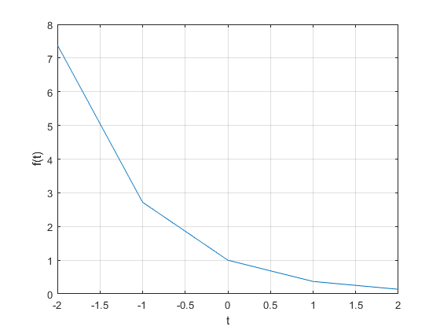
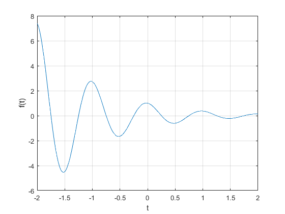
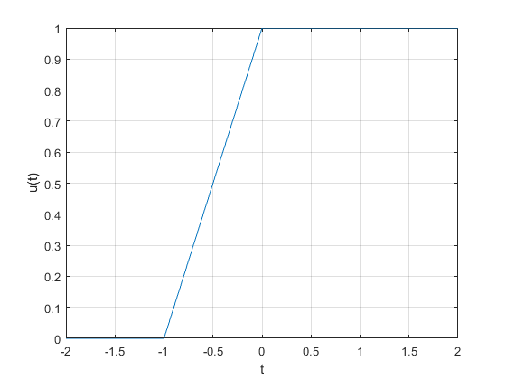
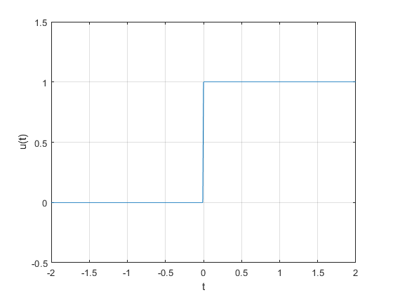
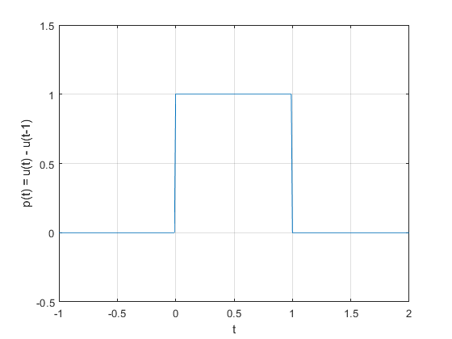
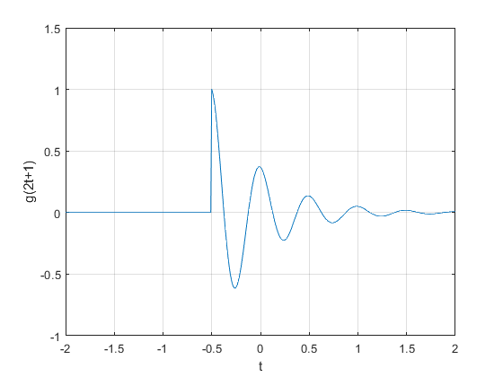
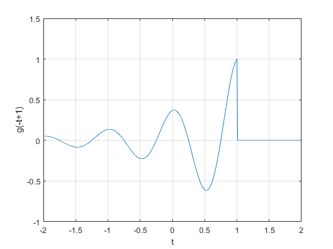
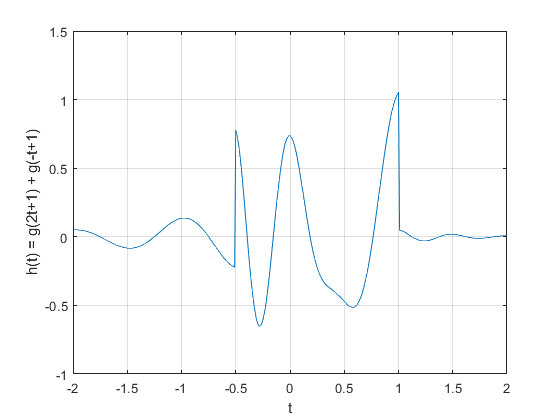

PROBLEMA 4
Contents
M1.1 Funciones Anónimas
Muchas funciones simples se representan más convenientemente mediante el uso de funciones anónimas en MATLAB. Una función anónima proporciona una representación simbólica de una función definida en términos de operadores y funciones de MATLAB. Por ejemplo, considere definir la siguiente señal: 
f = @(t) exp(-t).*cos(2*pi*t);
El primer argumento de la función anónima identidfica la variable o las variables de las cual depende dicha función. Una vez definida  puede evaluarse simplemente pasando los valores de entrada de interés. Por ejemplo:
puede evaluarse simplemente pasando los valores de entrada de interés. Por ejemplo:
t = 0; f(t)
ans =
1
El mismo resultado se obtiene al pasar  directamente.
directamente.
f(0)
ans =
1
Las entradas vectoriales permiten la evaluación de múltiples valores simultáneamente. Considere la tarea de trazar sobre el intervalo  . El comportamiento general de la función es claro: debe oscilar cuatro veces con una envoltura en descomposición. Dado que los bocetos manuales precisos son engorrosos, las gráficas generadas por MATLAB son una alternativa atractiva.
. El comportamiento general de la función es claro: debe oscilar cuatro veces con una envoltura en descomposición. Dado que los bocetos manuales precisos son engorrosos, las gráficas generadas por MATLAB son una alternativa atractiva.
Supongamos que el vector t se elige para incluir solo los números enteros contenidos en , a saber, ![$[-2, -1, 0, 1, 2]$](Problema4_eq02512188277393387566.png) .
.
t = (-2:2)
t =
-2 -1 0 1 2
Esta entrada vectorial se evalúa para formar una salida vectorial.
f(t)
ans =
7.3891 2.7183 1.0000 0.3679 0.1353
El comando plot representa el resultado gráfico que es el siguiente.
plot(t,f(t)); xlabel('t'); ylabel('f(t)'); grid on;
Las líneas de la cuadrícula, agregadas mediante el comando " grid ", ayudan a la identificación de la función. Desafortunadamente, la gráfica no ilustra el comportamiento oscilatorio esperado. Se requieren más puntos para representar adecuadamente f (t).
Entonces la pregunta es, ¿cuántos puntos son suficientes?. Si se eligen pocos puntos, la información se pierde. Si se eligen demasiados puntos, la memoria y el tiempo se pierden. Se necesita un equilibrio. Para las funciones oscilatorias, el trazado de 20 a 200 puntos por oscilación suele ser adecuado. Para el presente caso, se elige t para dar 100 puntos por oscilación.
t=linspace(-2,2,400);
De nuevo, la función es evaluada y trazada.
plot(t,f(t)); xlabel('t'); ylabel('f(t)'); grid on;
M1.2 Operadores relacionales y la función de paso de unidad
La función escalón unitario  surge naturalmente en muchas situaciones prácticas. Por ejemplo, un escalón unitario puede modelar el acto de encender un sistema. Con la ayuda de operadores relacionales, las funciones anónimas pueden representar los escalones unitarios.
surge naturalmente en muchas situaciones prácticas. Por ejemplo, un escalón unitario puede modelar el acto de encender un sistema. Con la ayuda de operadores relacionales, las funciones anónimas pueden representar los escalones unitarios.
En MATLAB, un operador relacional compara dos elementos. Si la comparación es verdadera, se devuelve un verdadero lógico (1). Si la comparación es falsa, se devuelve un falso lógico (0). Algunas veces llamadas funciones de indicador, los operadores relacionales indican si una condición es verdadera. Seis operadores relacionales están disponibles:  ,
,  ,
,  ,
,  ,
,  y
y  .
.
La función escalón unitario se define fácilmente utilizando el operador relacional .
u = @(t) t>=0;
Cualquier función con una discontinuidad de salto, como el escalón unitario, es difícil de trazar. Considere trazar en el intervalo .
t = (-2:2); plot (t,u(t)); xlabel('t'); ylabel('u(t)'); grid on;
Dos problemas significativos son evidentes en la gráfica resultante. En primer lugar, MATLAB escala automáticamente los ejes del trazado para delimitar estrechamente los datos. En este caso, esta característica normalmente oculta la mayor parte de la gráfica. En segundo lugar, MATLAB conecta los datos del trazado con las líneas, lo que dificulta la visualizacion de una discontinuidad de salto real. La cantidad de elementos que contiene el vector t hace que se muestre una línea de pendiente errónea entre  . Estas situaciones las podemos corregir de la siguiente manera.
. Estas situaciones las podemos corregir de la siguiente manera.
t = (-2:0.01:2); %Agregamos mas elementos a vector t plot (t,u(t)); xlabel('t'); ylabel('u(t)'); xlim([-2 2]); %Especificamos los limites de ylim([-0.5 1.5]); %visualizacion de los ejes X y Y grid on;
Los operadores relacionales se pueden combinar utilizando AND lógico  , OR lógico
, OR lógico  y negación lógica
y negación lógica  .
.
Por ejemplo,  y
y  ambas pruebas si
ambas pruebas si  Para demostrar, considere definir y trazar el pulso unitario
Para demostrar, considere definir y trazar el pulso unitario 
p = @(t) (t>=0 & t<1); t = (-1:0.01:2); plot(t,p(t)); xlabel('t'); ylabel('p(t) = u(t) - u(t-1)'); grid on; xlim([-1 2]); ylim([-0.5 1.5]);
Para los operandos escalares, MATLAB también admite dos construcciones lógicas de cortocircuito. Un AND lógico de cortocircuito se realiza utilizando  , y un OR lógico de cortocircuito se realiza utilizando
, y un OR lógico de cortocircuito se realiza utilizando  . Los operadores lógicos de cortocircuito son a menudo más eficientes que los operadores lógicos tradicionales porque prueban la segunda parte de la expresión solo cuando es necesario. Es decir, cuando la expresión escalar A se encuentra falsa en
. Los operadores lógicos de cortocircuito son a menudo más eficientes que los operadores lógicos tradicionales porque prueban la segunda parte de la expresión solo cuando es necesario. Es decir, cuando la expresión escalar A se encuentra falsa en  , la expresión escalar
, la expresión escalar  no se evalúa, ya que un resultado falso ya está garantizado. De manera similar, la expresión escalar no se evalúa cuando la expresión escalar A se encuentra verdadera en
no se evalúa, ya que un resultado falso ya está garantizado. De manera similar, la expresión escalar no se evalúa cuando la expresión escalar A se encuentra verdadera en  , ya que un resultado verdadero ya está garantizado.
, ya que un resultado verdadero ya está garantizado.
M1.3 Visualizando Operaciones en la Variable Independiente
Comúnmente se realizan dos operaciones en la variable independiente de una función: traslacion y escalamiento. Las funciones anónimas son adecuadas para investigar ambas operaciones.
Considere la función  ya que en MATLAB no es posible multiplicar funciones anónimas se necesita definir explícitamente a
ya que en MATLAB no es posible multiplicar funciones anónimas se necesita definir explícitamente a 
g = @(t) exp(-t).*cos(2*pi*t).*(t>=0);
Una operacion de traslacion y escalamiento se representa por  , donde a y b son constantes reales arbitrarias. Como ejemplo, considere la posibilidad de trazar
, donde a y b son constantes reales arbitrarias. Como ejemplo, considere la posibilidad de trazar  sobre el intervalo
sobre el intervalo
t = (-2:0.01:2); g1 = g(2*t+1); plot(t,g1); xlabel('t'); ylabel('g(2t+1)'); grid on; xlim([-2 2]); ylim([-1 1.5]);
Con  la funcion se comprime por un factor de 2, lo que da como resultado dos veces las oscilaciones por unidad t. Añadiendo la condición
la funcion se comprime por un factor de 2, lo que da como resultado dos veces las oscilaciones por unidad t. Añadiendo la condición  , la forma de onda se desplaza hacia la izquierda.
, la forma de onda se desplaza hacia la izquierda.
A continuación, considere la posibilidad de trazar  sobre el intervalo . Con
sobre el intervalo . Con  , la forma de onda se reflejará, al agregar la traslacion con , la forma de onda final se desplaza a la derecha.
, la forma de onda se reflejará, al agregar la traslacion con , la forma de onda final se desplaza a la derecha.
g2 = g(-t+1); plot(t,g2); xlabel('t'); ylabel('g(-t+1)'); grid on; xlim([-2 2]); ylim([-1 1.5]);
Como se puede apreciar los ejemplos anteriores son relativamente sencillos, por lo que ahora consideraremos trazar la siguiente funcion  esto sobre el intervalo
esto sobre el intervalo
g1 = g(2*t+1); g2 = g(-t+1); h = g1+g2; plot(t,h); xlabel('t'); ylabel('h(t) = g(2t+1) + g(-t+1)'); grid on; xlim([-2 2]); ylim([-1 1.5]);
Observe que un bosquejo a mano de la funcion  posee cierto grado de dificultad, pero en MATLAB con funciones anónimas ha sido bastante sencillo.
posee cierto grado de dificultad, pero en MATLAB con funciones anónimas ha sido bastante sencillo.
M1.4 Integración numérica y estimación de la energía de la señal.
A menudo muchas señales interesantes tienen representaciones matemáticas no triviales. Calcular la energía de la señal, que implica integrar la norma al cuadrado de dichas señales, puede ser una tarea desalentadora. Afortunadamente, muchas integrales difíciles se pueden estimar con precisión mediante técnicas de integración numérica. Incluso si la integración parece simple, la integración numérica proporciona una buena manera de verificar los resultados analíticos.
Para comenzar, considere la siguiente señal simple.
![$x(t)=e^{-t}[u(t)-u(t-1)]$](Problema4_eq02479177066401231825.png) .
.
La energía de  se representa como.
se representa como.

La integral de energía también puede ser evaluada numéricamente. Consideraremos realizar un método simple de aproximación rectangular, evalúe el integrando en puntos uniformemente separados por  , multipliqe cada uno por para caluclar as áreas del rectángulo y luego sumetodos los rectángulos.
, multipliqe cada uno por para caluclar as áreas del rectángulo y luego sumetodos los rectángulos.
Primero, creamos la función x (t).
x = @(t) exp(-t).*(t>=0 & t<1);
Al dejar  , se crea un vector de tiempo adecuado.
, se crea un vector de tiempo adecuado.
t = (0:0.01:1);
El resultado final se calcula utilizando el comando suma.
Ex = sum(x(t).*x(t)*0.01)
Ex =
0.4367
El resultado no es perfecto, pero al 1% de error relativo está cerca. Al reducir , se mejora la aproximación. Por ejemplo,  produce.
produce.
t = (0:0.001:1); Ex = sum(x(t).*x(t)*0.001)
Ex =
0.4328
0.1% de error relativo.
Aunque es fácil de visualizar, la aproximación rectangular no es la mejor técnica de integración numérica. La función MATLAB quad implementa una mejor técnica de integración numérica llamada cuadratura de Simpson adaptativa recursiva. Para operar, quad requiere una función que describa el integrando, el límite inferior de integración y el límite superior de integración. Tenga en cuenta que no es necesario especificar ?t. Para usar quad para estimar Ex, primero se debe describir el integrando.
x_2 = @(t) exp(-2*t).*(t>=0 & t<1); % x(t) elevada al cuadrado
La estimación de Ex sigue inmediatamente.
Ex = quad(x_2,0,1) %Por alguna razon esta función esta siendo removida de MATLAB conforme se vá actualizando
Ex =
0.4323
Se pueden usar las mismas técnicas para estimar la energía de señales más complejas. Considere definida previamente. La energía se expresa como.

Existe una solución de forma cerrada, pero requiere un poco de esfuerzo. MATLAB proporciona una respuesta más rápida.
g_2 = @(t) exp(-2*t).*(cos(2*pi*t).^2).*(t>=0);
Aunque el límite superior de integración es infinito, la envoltura en descomposición exponencial garantiza que sea efectivamente cero mucho antes de  . Por lo tanto, se usa un límite superior de junto con %\bigtriangleup t=0.001%.
. Por lo tanto, se usa un límite superior de junto con %\bigtriangleup t=0.001%.
t = (0:0.001:100); Eg = sum(g_2(t)*0.001)
Eg =
0.2567
Se obtiene una aproximación ligeramente mejor con la función quad.
Eg = quad(g_2,0,100)
Eg =
0.2562
Problema 5
Para la señal ![$x(t)=-t[u(t+4)-u(t)] + t[u(t)-u(t-2)]$](Problema4_eq10967790203392305396.png) realice las graficas
realice las graficas
a) 
b) 
c) 
d) 
e) 
x = @(t) -t.*(t>=-4 & t<0) + t.*(t>=0 & t<=2); t=[-10:0.001:10]; y=x(t); plot(t,y); xlim([-10 10]); ylim([-1 5]); grid on; title("Problema 1.2.2 Lathi") xlabel('t'); ylabel('x(t)=-t[u(t+4)-u(t)]+t[u(t)-u(t-2)');

a=x(t-4); plot(t,a); xlim([-10 10]); ylim([-1 5]); grid on; title("Inciso a)") xlabel('t'); ylabel('x(t-4)');

b=x((1/1.5)*t); plot(t,b); xlim([-10 10]); ylim([-1 5]); grid on; title("Inciso b)") xlabel('t'); ylabel('x(t/1.5)');

c=x(-t); plot(t,c); xlim([-10 10]); ylim([-1 5]); grid on; title("Inciso c)") xlabel('t'); ylabel('x(-t)');

d=x(2*t-4); plot(t,d); xlim([-10 10]); ylim([-1 5]); grid on; title("Inciso d)") xlabel('t'); ylabel('x(2t-4)');

e=x(2-t); plot(t,e); xlim([-10 10]); ylim([-1 5]); grid on; title("Inciso e)") xlabel('t'); ylabel('x(2-t)');